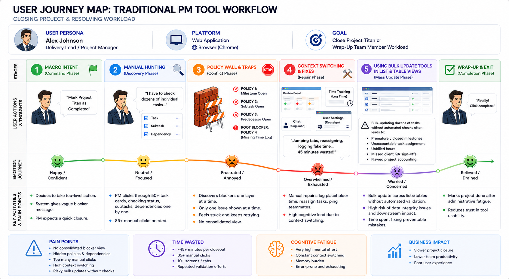
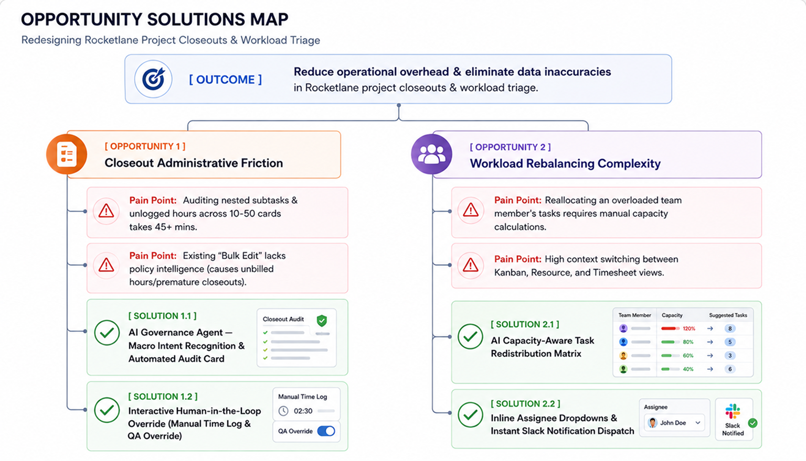
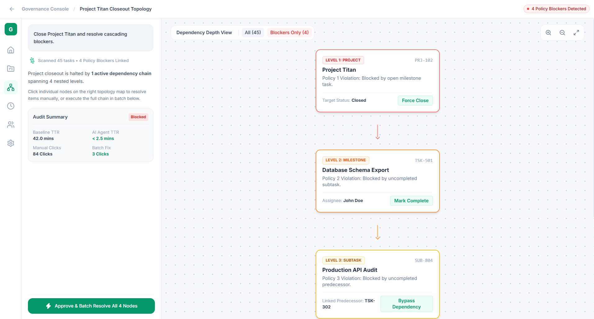
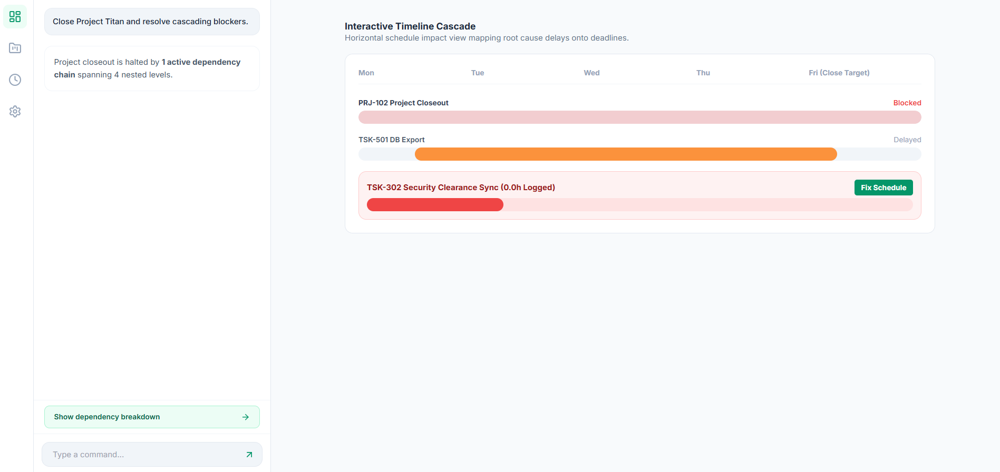
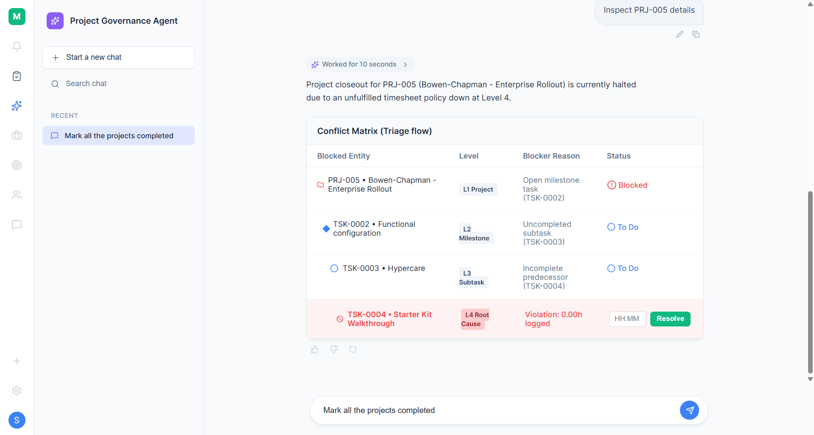

Design Process
An overview of the ideation, research, and iterative design phases that led to the final Project Governance Agent.
1. Understand the Problem
As the brief offers sufficient context, I’ll synthesize the key details to ensure alignment.
What is the problem?
In Rocketlane, wrapping up a customer onboarding project or balancing team workloads before the weekend often forces , Delivery Leads, and Project Managers to move across several boards, milestone phases, and time‑tracking views. They must check private versus shared client tasks, confirm document submissions, audit missing time logs against budgets, and clear blocked predecessor tasks.
This scattered, manual process slows operations and drains focus, leaving onboarding leads tied up in hours of administrative work instead of driving client value.
Who is affected? (The persona)
Primary Persona
Product Managers /Delivery lead (Delivery/ Program operations team)
Mindset
Execution‑focused and milestone‑driven: “I care about Time‑to‑Value for my clients, not clicking through endless task cards.”
How are users solving this today in Rocketlane?
Users rely on manual routines across different Rocketlane views and external tools:
- Manual Board Audits: Switch between Kanban, List, and Gantt/Timeline views to spot red-flagged or blocked client tasks.
- Context Switching: Jump into the Rocketlane Time Tracking module to check unsubmitted timesheets, then switch to Slack or email to follow up with team members or clients.
- Manual Overrides: Click into individual task cards to update statuses, manually adjust logged time, or reassign team members line-by-line.
- Bulk Update: Via Bulk update tools in list and table views which acts as basic property editors.
Pain Points in Rocketlane
- Project Closeout Friction
Managers must move across multiple project phases to check task statuses, subtasks, dependencies, client approvals, and missing timesheets.
- Resource Workload Rebalancing
Auditing a team member’s task list across several active projects requires manual review of unfinished items and task‑by‑task reassignment.
- Bulk Update Limitations
Current bulk update tools act as basic property editors, still forcing managers to go through manual checking of policy violation screen by screen often leads to flawed project accounting .
Impact on Project Operations:
- High Cognitive Fatigue
Managers are forced to reconcile scattered task statuses, policy rules, and project metrics across multiple views.
- Constant Context Switching
They jump between Kanban boards, resource allocation screens, and time‑tracking modules throughout the day.
- Operational Waste
Hours of leadership time are drained by manual admin work instead of being spent on strategic client outcomes.
- Risk of Inaccuracy
Bulk‑updating dozens of tasks without automated checks often leads to prematurely closed milestones, unaccountable task assignment, unbilled hours, missed client QA sign‑offs, and flawed project accounting.
What success looks like:
An AI-native governance experience embedded directly into Rocketlane that:
- Translates macro Intent into automated execution: Converts natural language commands (e.g., "Close project XYZ" or "Wrap up John's tasks") into structured, micro-level actions that replace tedious card-by-card clicks with batch operations.
- Eliminates context switching: Keeps the user centered in a single workspace view, drastically reducing the need to navigate through dozens of sub-menus and individual task screens.
- Reduces cognitive fatigue: Surfaces complex 4-level policy conflicts upfront through clear visual hierarchies,giving the user complete control and auditability without overwhelming them with text.
Which can be measured by:
- Operational efficiency metrics:
- Time-to-Resolution (TTR) for Macro Operations: Average time required to close out a Rocketlane project phase or rebalance resource capacity.
- Task-Click Reduction Rate: Total manual page views and clicks saved across Rocketlane views.
- Improve User Experience and Cognitive Load Metrices
- Conflict Resolution Friction Index (CRFI): The number of manual interventions required per policy blocker.
- Context-Switching Frequency: Number of tab switches between Rocketlane views (Board, Time Tracking, Resource Management) during an audit.
2. Discover Insights
To uncover root friction within Rocketlane workflows, research will be structured around qualitative contextual interviews and quantitative analytics benchmarks.
Contextual User Interview Framework
- Workflow Bottlenecks & Frequency:
"When you need to close out a project or rebalance an employee's workload, walk me through the steps you take to ensure all subtasks, dependencies, and time logs are cleared."
- Policy Discovery Friction:
"How do you currently find out if a top-level task is blocked by a nested subtask or an unlogged timesheet? Do you discover this before or after attempting to mark it complete?"
- Context Switching & Tool Fragmentation:
"How many different screens, tabs, or separate tools (e.g., Slack, timesheet app, board views) do you typically open to resolve a single blocked dependency chain?"
- Trust & Control in Automation:
"If an automated assistant offered to resolve multi-level task blockers for you in batch, what specific information or safeguards would you need to see before clicking 'Approve'?"
- Cognitive Load & Time Investment:
"How much time do you estimate spending per week on manual administrative audits versus strategic project delivery?"
Current user Journey:
{kind=link}

Quantitative Research & Baseline Analytics
| Metrices | What it is | Benchmark Value (Assumed Value) |
|---|---|---|
| Time-to-Resolution (TTR) for Macro Operations | Average time required to close out a project or rebalance a workload. | ~ 45 Minutes per closeout / rebalance workload |
| Task-Click Reduction Rate | Total manual page views/clicks required to handle cascading dependencies | 85 clicks (opening cards, checking subtask tabs, viewing predecessor links, entering time logs, toggling status). |
| Conflict Resolution Friction Index (CRFI) | The number of manual interventions required per policy blocker. | 4.2 manual interventions required per policy blocker (encountering blocker → investigating root task → switching to time tracker → updating status). |
| Context-Switching Frequency | Number of tab/board switches performed during a project closeout or workload audit. | 14 screen/tab switches (jumping between Kanban board, task detail modals, timesheets, and messaging channels to coordinate dependencies). |
3. Define Opportunity:
From Research to Design Strategy
The core operational failure was reframed as a business problem, mapped to human intent through Jobs‑to‑Be‑Done (JTBD), and visualized with an Opportunity Solution Tree (OST).
Jobs‑to‑Be‑Done (JTBD)
- Primary Job (Closeout & Workload Rebalancing)
When wrapping up a project phase or balancing workloads before the weekend, I want automated policy checks, time log audits, and capacity‑aware reassignments in one command, so I can ensure accuracy without clicking through dozens of task cards.
- Supporting Jobs
- Project Closeout: Automatically surface and resolve blockers, unlogged time, pending QA, missing client uploads, so projects aren’t closed incomplete or hours left unbilled.
- Workload Rebalancing: Get intelligent, capacity‑aware reallocation suggestions with quick manual overrides, so sprint tasks can be redistributed in seconds while keeping control.
- Human‑in‑the‑Loop Governance: When batch updates run, I want clear visibility into changes and inline tools to adjust values, so I never feel like critical data is being handled by a black box.
Opportunity Solution Tree (OST)
The Opportunity Solution Tree maps the primary business outcome directly to identified user opportunities and the corresponding AI-native feature capabilities designed in the prototype:
{kind=link}

Why Agent AI - Policy Governance Agent (Aligning with Rocketlane Nitro):
Traditional flow forces managers to grind through micro‑actions card by card. Rocketlane’s agentic AI framework (Nitro) shifts this from manual execution to intent‑driven delegation.
An AI Governance Agent is the right fit for project closeouts and workload rebalancing for three reasons:
- Native Fit with Nitro
Nitro is built around specialized agents that handle operations and enforce governance. Extending it with a Governance & Triage Agent turns Nitro into an execution engine that clears policy blockers across projects.
- Cross‑Module Reasoning vs. Static Bulk Edit
Bulk edit tools may only touch a single table view. An AI Agent carries context across Rocketlane’s modules: Kanban, Resource Allocation, Time Tracking and applies policy rules like unlogged timesheets, pending QA, or dependency links before making changes.
- Hybrid Automation with Human Control
Instead of opaque text responses, the agent pairs natural language intent with interactive UI cards. Managers see conflicts instantly and can override or adjust values before approving changes, keeping governance transparent and under control.
Key Workflow Shift: Legacy vs. AI-Native Rocketlane

Key Opportunity Statements & JTBD
- JTBD 1 (Project Closeout): "When I need to mark an onboarding phase complete in Rocketlane, I want to execute all cascading dependency checks, timesheet audits, and milestone validations in one action, so that I can lock project accounting without clicking through dozens of cards."
- JTBD 2 (Capacity-Aware Workload Rebalancing): "When a team member is overloaded or out of office, I want Rocketlane to surface their open tasks and suggest capacity-aware team reassignments, so that I can rebalance sprint workloads in seconds."
- JTBD 3 (Governance & Manual Override): "When automated rules resolve project blockers, I want full visibility into what changed and the ability to manually override time entries or team assignments directly in the chat card.
| Metrices | What it is | Benchmark Value (Assumed Value) | Target Value (Project Governance Agent) |
|---|---|---|---|
| Time-to-Resolution (TTR) for Macro Operations | Average time required to close out a project or rebalance a workload. | ~ 45 Minutes per closeout / rebalance workload | < 2 Minutes per operation |
| Task-Click Reduction Rate | Total manual page views/clicks required to handle cascading dependencies | 85 clicks (opening cards, checking subtask tabs, viewing predecessor links, entering time logs, toggling status). | 3–5 clicks (intent prompt + inline override/approval). |
| Conflict Resolution Friction Index (CRFI) | The number of manual interventions required per policy blocker. | 4.2 manual interventions required per policy blocker (encountering blocker → investigating root task → switching to time tracker → updating status). | 1 inline action (direct manual edit or auto-suggested resolution). |
| Context-Switching Frequency | Number of tab/board switches performed during a project closeout or workload audit. | 14 screen/tab switches (jumping between Kanban board, task detail modals, timesheets, and messaging channels to coordinate dependencies). | 0 switches (100% contained within the AI Agent workspace). |
4. Design & Iterate:
As an enterprise AI agent comprehends massive amounts of underlying data and complex cross-project interactions, I defined core architectural principles to solve this complexity, ensuring managers are never overwhelmed by data while retaining full operational control.
- Progressive Disclosure and Cognitive Chunking
Loading dozens of task statuses and warnings in one response overwhelms managers. Summarize at the macro level first (“1 project blocked”), with deeper details hidden inside collapsible UI cards that expand only when needed.
- Explainable AI with Provenance Cards
Managers won’t trust automated reassignments or time suggestions without transparency. Every recommendation should carry a clear reasoning badge (e.g., “Suggested 2.5h based on historical average” or “Reassigned to Cameron, 15% bandwidth remaining”).
- Hybrid Automation with Direct Manipulation
Text‑only outputs force “take it or leave it” decisions. Pair automated defaults with inline input fields and dropdowns inside chat cards, so managers can tweak hours or assignees instantly without leaving the thread.
- Fail‑Safe Governance and Auditability
Batch updates risk corrupting records or skipping approvals. Enforce mandatory override reasons and pre‑execution confirmation modals before changes go live, ensuring accountability and audit trails.
Proposed User Flow for Project closeout “Mark all my projects completed”:

Key Highlights:
- Demonstrates User Autonomy: The flow does not forces managers in a “black-box” automated decision, it allows managers/leads to choose between high-speed automation and precise manual control.
- Proves Multi-Level Dependency Handling: Multi level dependency handling: Flow illustrates how resolving a single Level 4 root cause automatically unblocks Level 3 subtasks, Level 2 milestones, and the Level 1 parent project.
- 5-Second Undo Safety Toast: Acts as a frictionless safety net by holding backend execution for 5 seconds immediately after a user confirms a bulk action, allowing instant one-click cancellations before any real database changes occur without slowing down power users with confirmation modals.
Proposed User Flow for Workload Rebalancing “Wrap Lisa’s Work With in Friday ”:

Key Highlights:
- Capacity‑Aware AI Reasoning
The agent doesn’t reassign tasks blindly. It factors in live sprint bandwidth before suggesting new owners, ensuring workloads stay balanced.
- Proactive Downstream Communication
Resolving workload friction automatically triggers team notifications via Slack or email so everyone stays aligned without extra manual steps.
Final Customer journey:

Iterations:
During the design phase, three distinct visual layouts were prototyped to determine the most effective way to present multi-level project blockers without causing cognitive overload for Engagement Managers.
Iteration 1: Horizontal Policy Board (Linear Triage)
- Concept: Organizes issues into step-by-step columns: 1. Root Policy Violations, 2. Dependent Blocked Tasks, and 3. Target Output.
- Key Insight: While it cleanly separates root causes from downstream effects, horizontal scrolling across enterprise screens created unnecessary friction during rapid triage.
{kind=link}

Iteration 2: Interactive Timeline Cascade (Gantt Schedule View)
- Concept: Maps root-cause delays onto a horizontal schedule timeline, showing how
TSK-302delaysPRJ-102 Project Closeout.
- Key Insight: Highly effective for time-sensitive scheduling, but it hid actionable micro-controls (such as direct time logging inputs and policy override buttons) behind extra hover and click states.
{kind=link}

Iteration 3: Node Topology Canvas (Visual Dependency Mapping)
- Concept: Renders a vertical node diagram (
Level 1 Project→Level 2 Milestone→Level 3 Subtask) on an infinite dot-grid canvas.
- Key Insight: Excellent for macro topology visualization, but forcing users onto a full-screen canvas detached them from Rocketlane's primary conversational workspace, adding unnecessary visual noise.

Iteration 4: Conversational Triage Matrix (Currently Implemented)
{kind=link}

Why the Final Conversational Matrix Won (Key Highlights and UX features)
Testing these explorations led directly to the final 3-Turn Conversational Matrix layout:
- Low learning curve, Simple spatial complexity (Standard grid/columns) and best for Action-first triage & policy-based organization
- 4-Level Visual Hierarchy:
- Displays the explicit parent-to-child dependency chain (
L1 Project→L2 Milestone→L3 Subtask→L4 Root Cause) so managers instantly understand why a project closeout is halted.
- Displays the explicit parent-to-child dependency chain (
- Progressive Disclosure & Cognitive Chunking:
- Replaces overwhelming multi-tab navigation with a structured, single-card layout that highlights only active policy violations, drastically reducing cognitive load.
- Direct Maneuverable (Human-in-the-Loop Controls):
- Integrates editable input fields (e.g., live
[ 02:30 ]time log boxes) and capacity-aware team reassignment dropdowns right inside the chat card for instant micro-adjustments.
- Integrates editable input fields (e.g., live
- Cascading Auto-Resolution Engine:
- Resolving the root-cause blocker at
L4automatically clears and updates all parent dependencies up toL1, transitioning the matrix into an emerald Resolved State with zero manual overhead.
- Resolving the root-cause blocker at
- Dual Resolution Pathways:
- Empowers managers to choose between a 1-Click Auto-Resolution (AI calculates historical time averages) and an Interactive Inspection Path (manual review and override).
- Zero View Switches: Managers get complete visibility into 4-level deep dependency chains and instant, editable controls without jumping to external Gantt charts or spatial node canvases.
5. Validate
Prototype Testing & Feedback
The solution was validated using a high-fidelity interactive web prototype simulating Rocketlane's UI environment, complete with real-time conversational states, animated thinking indicators, dynamic card transitions, and editable time input fields with real users:
- Competitor Tool Power Users (no of users=2): Compared the 3-turn triage flow against traditional bulk-edit/Gantt workflows in Jira and Asana for speed and clarity.
- UX/Product Designers (n of users =1): Validated visual hierarchy, cognitive load, and human-in-the-loop control patterns.
- Domain-Experienced Project & Program Managers (no of users =2): Evaluated business logic, policy override safety, and real-world applicability of the time log calculations.
What Works well:
- Control vs. Automation
Onboarding managers preferred interactive cards embedded in the chat stream over text‑only AI. Editable input fields turned the AI from an unpredictable black box into a trusted co‑pilot.
- Compliance and Audit Trails
Adding an Admin Governance Override reason field met enterprise compliance needs for force‑approving blocked tasks.
- At‑a‑Glance Scannability
Color‑coded status tokens Coral for Blocked, Amber for Action Required, Emerald for Resolved, let managers scan project health in seconds.
Areas to Improve (Yet to Implement):
- Edge Case: Missing Historical Logging Data
- Problem: What if the AI cannot calculate an expected time log for a novel task type due to lack of historical data?
- Fail safe design:
The agent gracefully falls back to the manual inspection path, highlighting the input field with a prompt:No historical baseline found • Please input estimated hours manually
6. Measure and Learn
Measure:
Post-Launch Impact Framework
Once deployed to Rocketlane enterprise accounts, impact will be tracked against baseline operational metrics:
| Metrices | Benchmark Value (Assumed Value) | Target Value (Project Governance Agent) | Projected Value |
|---|---|---|---|
| Time-to-Resolution (TTR) for Macro Operations | ~ 45 Minutes per closeout / rebalance workload | < 2 Minutes per operation | 1.5 mins (-96.6%) |
| Task-Click Reduction Rate | 85 clicks (opening cards, checking subtask tabs, viewing predecessor links, entering time logs, toggling status). | 3–5 clicks (intent prompt + inline override/approval). | 3 Clicks (-96.4%) |
| Conflict Resolution Friction Index (CRFI) | 4.2 manual interventions required per policy blocker (encountering blocker → investigating root task → switching to time tracker → updating status). | 1 inline action (direct manual edit or auto-suggested resolution). | - |
| Context-Switching Frequency | 14 screen/tab switches (jumping between Kanban board, task detail modals, timesheets, and messaging channels to coordinate dependencies). | 0 switches (100% contained within the AI Agent workspace). | 0 switches (100% contained within the AI Agent workspace). |
Learn:
Two features were implemented to track adoption and maintain oversight:
- Agent Introduction: Delivered through a coachmark or pop‑over to guide managers at first use.
- Inline Survey: Triggered after the “Mark My Projects Completed” action, capturing immediate feedback in context.
Micro‑CSAT and In‑Context Sentiment Tracking
- Inline Feedback Placement: A passive micro‑survey sits inside the Emerald Resolved Card at task completion, avoiding disruptive pop‑ups.
- Dual Signal Capture:
- Thumbs Up/Down to measure AI accuracy (“Did the agent fix the right root cause?”).
- 1–5 Customer Effort Score (Customer Effort Score) to measure workflow friction (“How effortless was this compared to manual edits?”).
- Target Benchmark: Maintain >90% positive accuracy on auto‑resolved blockers and keep CES below 1.5/5.
Feature Discovery and Adoption Mechanics
- Contextual Discovery Toast: A lightweight, coach mark/popover on assistant icon (“✨ Meet the Governance Agent: Audit and resolve blockers in seconds”).
- Core Telemetry Metrics:
- Discovery CTR: Tracks how many managers click to test conversational commands versus sticking with traditional navigation.
- Path Preference Distribution: Monitors adoption shift between Path A (1‑Click Auto‑Resolve) and Path B (Manual Inspection).
- 14‑Day Repeat Usage: Measures whether managers return to conversational triage for weekly closeouts, validating lasting behavior change.